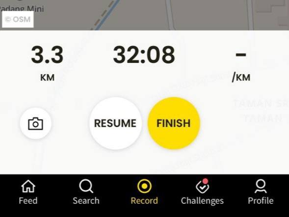
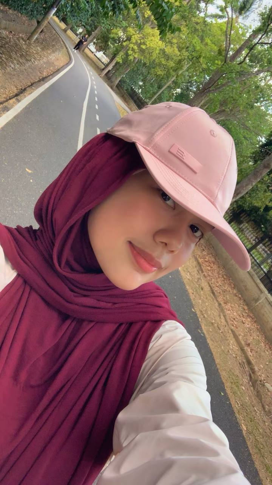

Cooking has become one of my most meaningful hobbies as it brings me happiness, comfort, and a sense of creativity. My interest in cooking started when I began helping my mother in the kitchen, where I slowly learned different cooking skills step by step. These small experiences helped me build confidence and develop my passion for cooking.
Although I am currently a student at UiTM and often have limited time, I always try to cook whenever I have the opportunity. During the PKP period, I spent a lot of time experimenting with various recipes such as Onde-Onde, Dalgona Coffee, and Kek Batik. From that moment, I realised how much I truly enjoy cooking, and my interest has continued to grow until today.
Whenever I have free time, especially during semester breaks or the month of Ramadan, I love trying new and interesting recipes such as Pudding Caramel inspired by Khairul Aming and Popia Carbonara inspired by Che Sayang. For me, cooking is not just about preparing food, but also a way to express creativity, relieve stress, and create meaningful moments with the people around me.
Figure 1: Khairul Aming
Figure 2: Che Sayang
At first, I did not like activities that were considered physically challenging. However, one day I was feeling stressed because of my studies, and I decided to go out for a brisk walk alone.
From that moment, I started to enjoy brisk walking because it helps me relieve stress and clear my mind. Whenever I feel stressed or bored at home, I will go for a brisk walk at nearby parks or forest areas close to my house. This activity makes me feel more relaxed, calm, and refreshed.

Figure 3: The Relive application used to track distance, time, and pace.

Figure 4: My jogging activity
Popia Carbonara
Pudding Caramel